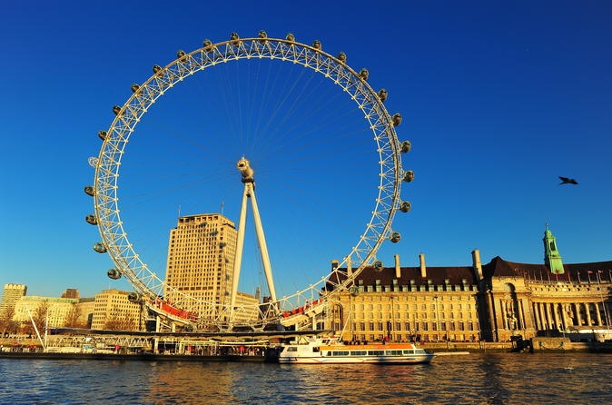
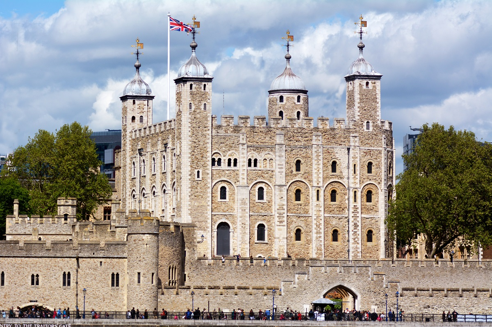
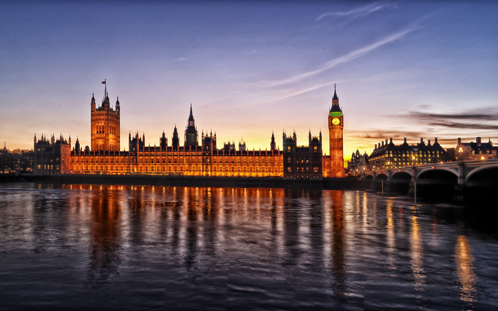

London
London is the capital and most populous city of England and the United Kingdom. Standing on the River Thames in the south east of the island of Great Britain, London has been a major settlement for two millennia. It was founded by the Romans, who named it Londinium. London's ancient core, the City of London, largely retains its 1.12-square-mile (2.9 km2) medieval boundaries. Since at least the 19th century, "London" has also referred to the metropolis around this core, historically split between Middlesex, Essex, Surrey, Kent, and Hertfordshire, which today largely makes up Greater London, governed by the Mayor of London and the London Assembly. London is a leading global city in the arts, commerce, education, entertainment, fashion, finance, healthcare, media, professional services, research and development, tourism, and transportation. It is crowned as the world's largest financial centre and has the fifth- or sixth-largest metropolitan area GDP in the world. London is a world cultural capital. It is the world's most-visited city as measured by international arrivals and has the world's largest city airport system measured by passenger traffic. London is the world's leading investment destination, hosting more international retailers and ultra high-net-worth individuals than any other city. London's universities form the largest concentration of higher education institutes in Europe. In 2012, London became the first city to have hosted the modern Summer Olympic Games three times.
I live in 221B Baker Street in London.
The London Eye
 The London Eye is a giant Ferris wheel on the South Bank of the River Thames in London. Also known as the Millennium Wheel, it has also been called by its owners the British Airways London Eye, the Merlin Entertainments London Eye, the EDF Energy London Eye and, as of mid-January 2015, the Coca-Cola London Eye.
The structure is 443 feet (135 m) tall and the wheel has a diameter of 394 feet (120 m). When erected in 1999 it was the world's tallest Ferris wheel. Its height was surpassed by the 520 feet (158 m) tall Star of Nanchang in 2006, the 541 feet (165 m) tall Singapore Flyer in 2008, and the 550 feet (168 m) High Roller (Las Vegas) in 2014. Supported by an A-frame on one side only, unlike the taller Nanchang and Singapore wheels, the Eye is described by its operators as "the world's tallest cantilevered observation wheel".
Tower of London
The Tower of London, officially Her Majesty's Royal Palace and Fortress of the Tower of London, is a historic castle located on the north bank of the River Thames in central London. It lies within the London Borough of Tower Hamlets, separated from the eastern edge of the square mile of the City of London by the open space known as Tower Hill. It was founded towards the end of 1066 as part of the Norman Conquest of England. The White Tower, which gives the entire castle its name, was built by William the Conqueror in 1078 and was a resented symbol of oppression, inflicted upon London by the new ruling elite. The castle was used as a prison from 1100 (Ranulf Flambard) until 1952 (Kray twins), although that was not its primary purpose. A grand palace early in its history, it served as a royal residence. As a whole, the Tower is a complex of several buildings set within two concentric rings of defensive walls and a moat. There were several phases of expansion, mainly under Kings Richard the Lionheart, Henry III, and Edward I in the 12th and 13th centuries. The general layout established by the late 13th century remains despite later activity on the site.
Palace of Westminster
The Palace of Westminster is the meeting place of the House of Commons and the House of Lords, the two houses of the Parliament of the United Kingdom. Commonly known as the Houses of Parliament after its occupants, the Palace lies on the north bank of the River Thames in the City of Westminster, in central London. Its name, which is derived from the neighbouring Westminster Abbey, may refer to either of two structures: the Old Palace, a medieval building complex destroyed by fire in 1834, and its replacement, the New Palace that stands today. The palace is owned by the monarch in right of the Crown and for ceremonial purposes, retains its original status as a royal residence. The building is managed by committees appointed by both houses, which report to the Speaker of the House of Commons and the Lord Speaker.